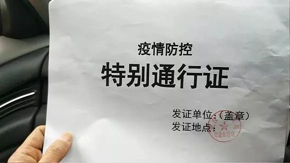

武汉疫情升级，医疗物资募集七日实录
原文链接 备份链接 在这场抗击新病毒的战争中，一线医护人员不得不为自身防护揪心，他们和医院、捐赠人一起被迫卷入一场医疗物资的募捐赛 文 |《财经》记者王丽娜 辛颖 编辑 | 王小 这是历次疫情中，一线医院大批量第一次直接向公众募捐，也是 …

「不是告急！是没有了！！」近两日，武汉协和医院、中南医院再次通过社交网络对外募集物资，对此，网友们纷纷发表质疑：全国各地都在往武汉捐医疗物资，物资到底去哪了？
文 | 易方兴 郑丹
编辑 | 金石
采购难
没货，没货，没货
「一开始觉得能募集到50万就差不多。」
2020年1月23号上午10点，武汉封城，武汉市各大医院物资紧缺的消息也相继传出。其中，武汉大学两家附属医院——人民医院和中南医院医疗向校友紧急求助，当晚9点多，武汉大学北京校友会先用垫付的方式买下了1000套防护服，随后开始募款——50万，这是武大临床医学2002级校友李大林心中的期望值。
钱像潮水一样涌来。
募款信息发出后，仅用了一个小时，50万的目标就已经达到，39个小时后，捐款达到了校友会的成员们谁都不敢想的数字——1600万。这期间，微信收款码失效，他们不得不换成了支付宝和银行卡。
捐款者来自全国各地，早已超过了武大校友的范围。一位名叫雅君的捐款者在文章下留言，「不是武大校友，但是在朋友圈看到这个捐助渠道，并选择信任，已捐款。希望物资能顺利到武汉医护人员手上。」
这让李大林非常感动，他加入了校友会采购组，负责医疗物资的采购——随后发生的事不断证实着一个结论：民间团体驰援疫区，筹款成了其中最容易的事。

武大抗击新型肺炎基金的微信捐款页面。图源武汉大学北京校友会微信公号
「我每天花16个小时找物资。」1月28日，李大林对《人物》诉苦。包括他在内，武大校友会采购组一共七人，成员包括了医疗集团、一线医务人员、制药公司、疾控中心等医疗链条各环节的专业人士，但采购依然困难重重。
这些天，他做得最多的事就是接电话和打电话，听到最多的话是「没货了」。他们先是找到了一本医疗用品采购目录，上面列举了全国各个地方有资质的医疗物资生产厂家，每天挨个打电话，几天下来把全国所有的相关企业都打了一个遍。
「目前国内的大工厂，绝大部分都在与政府对接，真正能给我们争取到的只有剩下的一成。」有一次，李大林他们连钱都付了，结果货被征用，厂家又把钱退了。还有一次，他给某个省的厂家打电话，对方委婉地说，他们厂刚刚捐给武汉一批医疗物资，现在也要给当地留一点。他也理解，「整个中国都在抗疫，各地也要有所准备。」
武大深圳校友会也遇到了同样的情况，他们在短时间内筹集到近2000万捐款，但也难花出去。
以防护服为例，据相关数据统计，湖北省内医院目前每天约消耗10万件防护服，但整个中国的防护服产能只有每天3万件。武大深圳校友会采购组的刘宇凌说，一开始，他拿到了全国所有防护服厂家的电话，并且做好了有多少买多少的打算，但现实是残酷的，他每天从早上打电话到凌晨2点，回应他的是不断的失望，「现在最不缺的就是钱。」
与国内的民间机构相比，海外民间机构的采购难度似乎要小很多，毕竟，他们交出的答卷也「漂亮」很多——华中科技大学德国校友会在不到一周的时间内，采购到了2万5千件防护服，24万个医用级别口罩，外加4000个护目镜，但在这背后，是一个「差点下跪」的故事。
大年三十当天，看到国内的疫情，华科德国校友会会长叶继文当即拍板，先不募捐，先去找货源是第一位的。他是易优集团创始人，这本身就是一家跨国物流公司，在德国颇有人脉。他了解到当地医疗物资供货商Dach公司有一批货，马上自掏腰包20万欧元全部订下。
但Dach公司的CEO压下了这批货，原因是：「如果德国也爆发了怎么办？我们也要给德国医院留口罩。」就在对方计划全部退款的时候，该校友会副会长徐涛开车赶到了工厂，徐涛是做采购谈判的，他跟德国人谈了一个多小时，对方一直不松口，情急之下，他拿出了武汉医院的视频，「把德国人看崩溃了」，徐涛告诉德国人，「如果武汉顶住了，德国就能顶得住！」最终，这笔交易也被这几段视频挽救。事后，徐涛感慨，「干采购这么多年，头一回体会到了买东西差点下跪的感觉。」
 华科德国校友会向武汉协和医院定向捐赠的首批物资已清关。图源中国红十字基金会微博
华科德国校友会向武汉协和医院定向捐赠的首批物资已清关。图源中国红十字基金会微博
决策难
防溢价，防被骗
这些天，像武汉大学北京校友会这样的民间机构所能找到的医疗物资货源，大多都集中在一些经销商手中，这时，价格就成了最大的问题。
李大林接触的最离谱的一个经销商，把此前市场价6块左右的N95口罩，卖到了70块钱一个，翻了十倍多，而李大林最多能接受的也就是20块钱以内。他试图跟对方打情感牌，但基本没用，「他们都是个人经营，不会管你是不是援助前线的医院，比如说他有10万口罩在手上，他这卖贵一点，一下能多赚多少钱？反正，你不要有的是人要。」
「我们的钱都是捐赠的，购买的价格必须对得起大众的检验。」李大林思量再三，还是决定放弃了那批溢价过多的口罩。后来，在与其他成员商量后，武大北京校友会决定，医疗物资的采购价顶多是平时的两倍，特殊的比较紧缺的可以三倍。比如一次性医用口罩，以前接近一块钱一个，李大林看到一个货源，2万个，2块5一个，「我还是觉得有点贵，就没买。」
花钱实在是太难了。李大林每天都淹没在信息的海洋中。「打电话过去，这些供货信息里，百分之八十以上都是民用的物资，医院不要；然后剩下百分之十几是合格的医用物资，但是要价太高，也不能买；剩下只有不到百分之五可以考虑，但在审核查询企业资质、或者沟通洽谈的过程中，货就被抢完了。」
而在这种「抢购」风潮中，采购信息的筛选也成了很多民间机构采购人员面临的重要问题。以一个500人的「医护资源互助」微信群为例，每天会发布2000条以上的信息，其中需要筛选的供货方的信息就超过200条。像这样的群，每个负责采购的人都要加十个以上。
壹心娱乐是一家艺人经纪公司。按照以前的模式，艺人们捐了钱，发一个消息，就差不多了。但这次不一样，疫区缺的是物资，所以钱只有变成物资才有意义，因此，这家公司募款后也开始找渠道采购医疗物资，希望点对点对医院进行援助。
目前，市面上的N95医用口罩已经涨到了均价16块钱一个，而壹心娱乐的采购人员张雪在一堆信息中看到了一个8.5元的报价，于是迅速联络对方。接电话的是一个年轻女孩，很快拉了张雪进群。那个女孩在群里提供了口罩视频，说是朋友开的厂子，每天都会催促大家「快买」，抢购心切的买家纷纷出手，张雪也下了一笔一万只口罩的订单，价值8万5千元。只是，款付了，对方给的订单号是个三无订单，既查不到寄送地址，也查不到任何物流信息。
张雪急了，截图、录音、打电话告诉对方要走法律程序，最终，对方答应「再等两天，如果货还没到就退款」。
买家谨防卖家，而卖家也同样在提防买家。
张雪遇到过一个疑心特别重的厂家。这个厂家在山东，专门生产医用的免洗消毒液，对方的问题很尖锐：「你们是谁？你们买到底出于什么目的？你们要怎么证明你们是捐给医院的？」
在这样的时期，厂家也会接到大量的电话，其中也不乏一些想以低价收购物资囤货、然后高价卖出牟利的商家，因此，厂家也很警觉。除了发给对方营业执照等证明材料之外，张雪想出一个办法，把对方拉到自己所在的不同的医院对接群里，「对方可以自己判断。而且收货地点直接写医院，过程我们都不参与。」
花了整整一天的时间，她终于得到了厂家的信任——275箱医用免洗消毒液的订单最终达成。
李大林还在艰难地花钱，根据最新的公告，截至1月29日下午6点，武大北京校友会一共买到了约700个N95口罩、2500套防护服、约3600个护目镜、200台医用空气消毒机，以及数以万计的一次性手术隔离衣、医用外科手套、消毒液等物资，共花费538万元，还不到捐款总额的三分之一。而与此同时，物资采购的价格也越来越高，例如，1月24日时，防护服的价格为140元一件，到了1月27日，防护服的价格已经涨到了262元一件。
 为了让捐赠人们放心，武汉大学北京校友会将采购的防护物资在公号上展示。图源武汉大学北京校友会微信公号
为了让捐赠人们放心，武汉大学北京校友会将采购的防护物资在公号上展示。图源武汉大学北京校友会微信公号
物流难
道路不畅，送货有去无回
买到275箱医用免洗消毒液的时候，张雪觉得终于松了一口气，但很快，她发现了更大的麻烦，这些消毒液只能以每天20到60箱的数量发往湖北的众多医院——物流问题几乎已经成了制约物资运往前线的「最后一公里」。
目前，大型物流公司例如顺丰、德邦、京东物流已加入政府官方组织的公益运输之中。根据京东物流对外的公告称，日均运输20吨的物资送达武汉。但这些大型物流公司不一定顾得上民间捐助，顺丰也曾发公告表示：「非常时期，为提升运输效率，保障一线特殊需求，目前暂无法为个人捐赠物资提供公益物流运输支持。」
因此，民间机构募集的医疗物资的运输更多的还是需要自己想办法，但各地隔离的举措给物流的运输带来了困难。
武大北京校友会在24日采购到的第一批医疗物资，是口罩和一次性手术隔离衣。「买到了我们都很高兴，但没想到找不到愿意进武汉的货车司机，因为武汉只能进不能出。」按照防疫隔离的要求，外地车辆进入武汉，司机要隔离14天。「哪怕是加一千块钱运费，也没有人愿意拉。无奈，供货商只能将货运到湖北天门市，我们再想办法送到武汉去。」
行业里把给武汉运物资形容为「有去无回」。据《AI财经社》报道，一家电商企业的高管透露，现在最困难和最混乱的是，支援武汉的物流到达武汉后都不让离开。「再这样下去，大车都快折腾没了。」不光如此，即便是运到武汉且成功出来了，回到出发地之后还会被要求隔离14天。「几家头部快递公司都遇到这种问题，本来春节期间到岗的员工就不多，现在战士们越来越少。」
 货运员在搬运防护物资。图源AI财经社微信公号
货运员在搬运防护物资。图源AI财经社微信公号
与此同时，其他地区对湖北牌照车辆的警惕也令整个运输变得越来越难。
52岁的湖北襄阳人赵军，刚刚经历了一次从河南长垣拉医疗物资回襄阳的经历，堪比谍战片。1月28日，他临时得到生产厂家的消息，他此前订购的、准备捐给医院的4万多个口罩、200套防护服、200副护目镜没法发物流了，需要他们自己来取。
「长垣是中国的医疗耗材之都，很多地方开救护车去找货，有的是副市长去都拿不到货，还好我们打招呼比较早。」赵军说，即便如此，情况也已经相当紧急。为了守住这批货，他们的供应商一直守在厂里没敢动，晚上还在车里睡觉。再不去拿，货就没了。
出发之前，他花了一整天的时间办《紧急防疫保障物资运输通行证明》，找襄阳应急指挥部、疾控中心、公安局、医院挨个盖了章，然后把证明像宝贝一样放到羽绒服最里层。
 一位将物资运往武汉的货车司机得到的特别通行证。图源界面新闻
从襄阳到长垣，停了三次高速服务区，赵军本想吃碗面，但对方一看是湖北牌照，面都不让吃，就撵人了，「都说赶紧走不走就报警了。」到了长垣下高速，赵军一看当地已经封闭了，凡是外地车，没有正当证明，全要给拦回去，甚至有个当地牌照的车，但车主是贵州身份证，说回来看亲戚也被拦了。他赶紧把证明掏出来，递给警察，还不停地说好话，说「我们离武汉300多公里，是唯一没有封城的城市。」
警察还是在犹豫，看得出很不情愿。这是赵军这辈子「除了媳妇生娃之外感受到的最长的几分钟」，冷汗都从背上下来了。好不容易终于放行了，还不敢进厂子取。因为当地对湖北牌照很敏感，只能约在一个偏僻无人的地方把货装了，「装货的时候我感觉厂里的人比我们还紧张，装了就跑，数目也没点，手都没握。」
为了解决湖北物流运力紧张的状况，武汉物流协会组织了一个「防疫志愿货车群」，三百多名跑湖北运输的货车司机自愿报名，加入进来，但这仍然是杯水车薪，再加上疫情的蔓延，不仅运输需求远远大于供给，运输效率也比往常低了很多。
武汉本地的货车司机梁勇已经连续五天参与志愿运输了。他的车不大，是一辆红色的7米8厢式货车，能装10吨，是武汉牌照，进出武汉不用隔离，瞬间成了宝贵的运力，各种物流的活都来找他。
1月28日，梁勇帮一个民间机构运送了一批护目镜，以及消毒水，目的地是武汉周边的另一个重灾区——黄冈市人民医院。平时武汉到黄冈，一个多小时可能就到了，但现在要3个小时，因为疾控中心的关卡很多，每过一个关卡，就要进行车身消毒，还要给他测体温。
湖北此前的阴雨天气也加大了运输的难度。货车司机曾翔宇在运物资走国道的时候，车子陷入泥潭，一天都没出来。此外，湖北境内很多村与村的道路「好多都挖断了」，运输更是难上加难。
 有的运货司机口罩都来不及换，一个口罩要戴两三天。图源新京报视频截图
有的运货司机口罩都来不及换，一个口罩要戴两三天。图源新京报视频截图
医院难
民间物资能救急，但数量奇缺
通过社交网络直接募集医疗物资——对于绝大多数的公立医院而言，这是从未有过的做法。武汉某三甲医院一位不愿透露姓名的医生说，通常的做法是，各个科室向采购部门提需求，汇总之后再找指挥部申请。「但现在来不及了，民间点对点的捐助，比走这个流程快多了。」
通常，医院会在募集公告上直接公布收集物资的医生电话，民间机构看到后，会将不同医院的医生拉进各自的捐赠群，进行物资的分配，医院在收到捐助后，医生们会拍下照片发到对接群里，一一确认。
武大互联网AI分会的副秘书长吴杨把这称之为「去中心化」。这种模式会大大提高捐赠的沟通效率，但是，捐赠效率一开始却并不高。
王良是武汉某医院负责接收物资的医生，为了找物资，他加了七八个对接医院的群，每天都在群里对接各种信息，他所在的医院也陆续收到了不少来自民间机构的医疗物资，但符合临床医疗标准的物资只有两成。
「27号接到电话，说有快递让我下去，我很激动，喊了两个同事下去搬，结果是一批黑色的没有写明标准的口罩，四箱，这个我们都不敢用；28号上午又收到了，捐过来的虽然是N95口罩，两箱，但是很可惜带了呼吸阀，我们转给后方的医生用了。这时候我们自己科室只剩40个n95口罩了，很紧急，结果下午我又收到快递，打开一看是洗手液，这个我们也用得上，但是不是最急缺的。」
医疗物资是特殊商品，武大深圳校友会的采购人员刘宇凌说，国内的医用口罩分为医用防护口罩（N95）、医用外科口罩、以及一次性医用口罩三种。各种之间执行不同的标准，价格差距大，使用范围也各不相同。其中，一线医护人员需要的是符合GB19083-2010的医用防护口罩——如武大、华科校友会这样的机构，由于采购人员都是从事医疗行业的校友，因此比普通民间机构把关更严，采购的医疗物资也合格率更高。
为了解决捐赠质量的问题，王良此后会要求民间机构采购物资时拍照，「如果他们找到货源了，会第一时间把照片发在群里，问我们这种能不能用，如果我们看了确实能用，他们就会安排直接往医院发货，但是物流什么都是他们想办法，说实话也很感谢他们。」
《人物》联系了二十多家前线医院的物资采购人员，对方均表示民间捐助的物资对他们起了很大帮助。

在防护物资充足的情况下，医护人员每人每天需使用三件防护服才能有效保护自己。图源视频截图
「我觉得民间力量给我们提供最大的帮助在于，在官方渠道申请的物资还没下来的这几天里，民间提供的医疗物资救了急。」 武汉市另一家医院的采购科科长告诉《人物》，「自从疫情爆发到现在，就没从红十字会得到一点东西，相比之下，民间捐助倒是不断有过来的。」据他介绍，1月27日，他所在的医院仅剩300多个N95口罩，只能够勉强用一天，但「当天还好收到了一批民间捐助，从美国捐来的，500个美国标准的N95口罩，把我们高兴坏了，又能坚持一天多了。」
这也是目前民间机构捐赠能发挥的最大作用——能救急，只是，偶尔的救急并不能解决武汉及周边的各个医院医疗物资短缺的问题，自1月23日武汉封城、疫情加剧以来，民间机构的捐助相当踊跃，但是采购难、物流难等问题使得募集到的物资相比医院巨大的缺口，仍然是杯水车薪。
武汉一家三甲医院的医生说，他们医院里，病人装了两栋楼，两栋楼一共上千个医务人员，每天都要消耗掉1000个N95口罩、1000件防护服、1000副护目镜。而这还是在医务人员每天省着用的前提下做的统计。
这还只是一家医院，按照武汉市「7+7」的模式，一共有14家医院投入到抗疫前线中，每天光定点医院消耗的防护口罩、防护服、护目镜就数以万计。
1月30日及31日两天，武汉协和医院和中南医院再次通过社交网络发布募集信息，两家医院的公告都使用了大量的感叹号，且都言辞紧迫：「不是告急！是没有了！！」甚至还表示，「只要你弄到了符合标准的医用物资，邮费可以到付！！」
对此，武大北京校友会采购人李大林相当无奈，「我们尽全力找物资，结果现在对口医院医疗物资还是缺。」
不过也有好消息，华中科技大学德国校友会与北京校友会联合捐赠的第一批临床医护物资，连同德国同济校友会委托华科德国校友会捐赠的医护物资已经运抵武汉，总数超过40万只的口罩、2.5万套防护服以及4000个防护面罩正在按照登记的先后顺序分批发往武汉及其周边的医院，而同等数量的后续物资也已于北京时间1月31日开始陆续登机前往武汉。
只是，这样的成功已经不好再复制了，因为，「德国已经有确诊患者，我们预定的后续物资，德企已经留用为德国预备了。」华科德国校友会会长何烁说。
（应采访对象要求，赵军、张雪、王良均为化名）

原文链接 备份链接 在这场抗击新病毒的战争中，一线医护人员不得不为自身防护揪心，他们和医院、捐赠人一起被迫卷入一场医疗物资的募捐赛 文 |《财经》记者王丽娜 辛颖 编辑 | 王小 这是历次疫情中，一线医院大批量第一次直接向公众募捐，也是 …
原文链接 备份链接 海内外源源不断捐赠武汉，各大医院仍全面告急。被指定接收捐赠物资的主要机构湖北省与武汉市红十字会系统成为众矢之的，他们原本应该为重大突发事件做好准备，却一开始就因专业能力不足遭遇了信任危机。 本刊记者探访了武汉红十字会位 …
原文链接 备份链接 武汉市已将所有捐赠物资集中统一调配，这有助于物尽其用，但配送效率亟须提升。这几日陆续有社会捐赠物资送到武汉协和医院，但仅有一线医护人员能穿上防护服，很多医用物资仍然紧缺 文 |《财经》 …
原文链接 备份链接 来源：腾讯新闻《潜望》 栏目 作者：张珺 从北上广深等城市筹集善款到口罩、防护服发放到医生护士手中，需要经历多少难关？ 1月初开始新型冠状病毒席卷中国，商业公司、基金会、普通民众、海外华侨留学生，捐赠速度空前。包括企业 …
原文链接 备份链接 新型冠状病毒疫情像是一场突如其来的阴霾，在这个冬天笼罩了华中大地。相较于最受关注的武汉市民，周边城市的人们，像是处在阴霾边缘，遭受侵袭，却又不常被看见。面对重重困难，孝感、黄冈、黄石、信阳、荆州、天门……各个城市的百姓 …